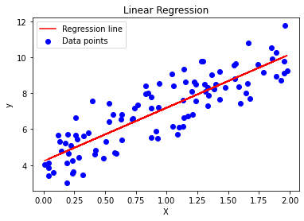

Regression analysis is a cornerstone of statistics and machine learning, offering insights into the relationships between variables. This post explores two fundamental types: Linear and Non-Linear Regression.
Linear Regression
What is Linear Regression?
Linear regression is a statistical method for modeling the relationship between a dependent variable and one or more independent variables using a linear equation.
The Equation
The equation for a simple linear regression (one independent variable) is:
\[ y = \beta_0 + \beta_1x + \epsilon\]
import numpy as npimport matplotlib.pyplot as plt# Generating synthetic data for linear regressionnp.random.seed(0)X =2* np.random.rand(100, 1)y =4+3* X + np.random.randn(100, 1)# Implementing Linear Regression from scratchclass LinearRegression:def__init__(self):self.weights =Nonedef fit(self, X, y):# Adding a column of ones for the intercept X_b = np.c_[np.ones((X.shape[0], 1)), X]self.weights = np.linalg.inv(X_b.T.dot(X_b)).dot(X_b.T).dot(y)def predict(self, X): X_b = np.c_[np.ones((X.shape[0], 1)), X]return X_b.dot(self.weights)# Creating and training the modelmodel = LinearRegression()model.fit(X, y)predictions = model.predict(X)# Plotting the data and the regression lineplt.scatter(X, y, color='blue', label='Data points')plt.plot(X, predictions, color='red', label='Regression line')plt.xlabel('X')plt.ylabel('y')plt.title('Linear Regression')plt.legend()plt.show()

Non-Linear Regression
What is Non-Linear Regression?
Non-Linear Regression is used for more complex data where a linear model is insufficient. It captures the non-linear relationships between the dependent and independent variables.
The Equation
A common form of non-linear regression is polynomial regression. The equation for a second-degree polynomial regression is:
\[y = \beta_0 + \beta_1x + \beta_2x^2 + \epsilon\] This equation can be extended to higher degrees depending on the data complexity.
# Re-running the corrected code for non-linear (polynomial) regressionimport numpy as npimport operatorimport matplotlib.pyplot as pltfrom sklearn.preprocessing import PolynomialFeatures# Generating synthetic data for non-linear (polynomial) regressionnp.random.seed(0)X_nl =2-3* np.random.normal(0, 1, 100)y_nl = X_nl -2* (X_nl **2) + np.random.normal(-3, 3, 100)# Transforming the data to include polynomial featurespoly_features = PolynomialFeatures(degree=2, include_bias=False)X_poly = poly_features.fit_transform(X_nl.reshape(-1, 1))# Reusing the LinearRegression class for polynomial regressionmodel_nl = LinearRegression()model_nl.fit(X_poly, y_nl.reshape(-1, 1))predictions_nl = model_nl.predict(X_poly)# Sorting values for a smooth line plotsort_axis = operator.itemgetter(0)sorted_zip =sorted(zip(X_nl, predictions_nl), key=sort_axis)X_nl_sorted, predictions_nl_sorted =zip(*sorted_zip)# Plotting the data and the polynomial regression curveplt.scatter(X_nl, y_nl, color='green', label='Data points')plt.plot(X_nl_sorted, predictions_nl_sorted, color='magenta', label='Polynomial regression curve')plt.xlabel('X')plt.ylabel('y')plt.title('Non-Linear (Polynomial)')plt.legend()plt.show()
The Difference
Linear regression’s simplicity is both its strength and limitation. Non-linear regression, while more complex, can model complex relationships in data. The choice depends on the data and the problem at hand.
Conclusion
Understanding the theoretical underpinnings of linear and non-linear regression, along with their practical applications, is essential for effective data analysis. By grasping these concepts and mastering their implementations, you can unlock deeper insights from your data.